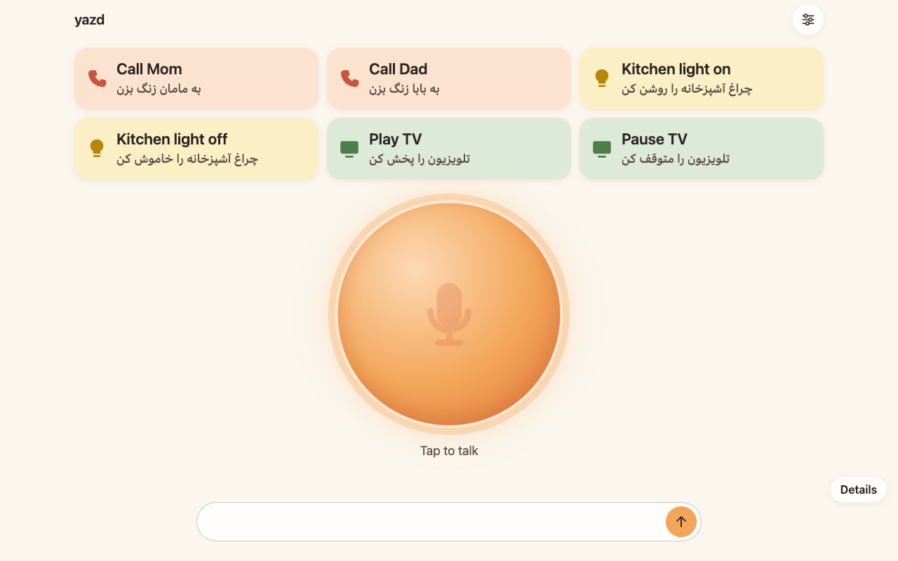
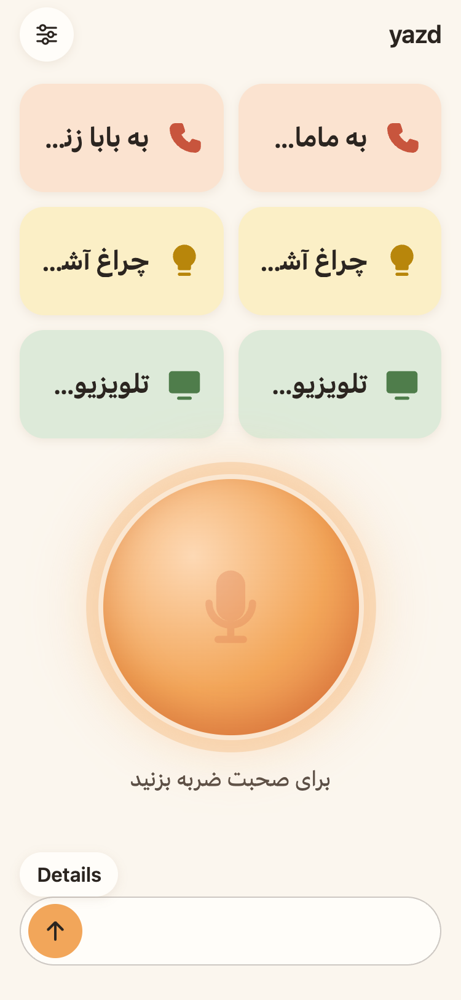
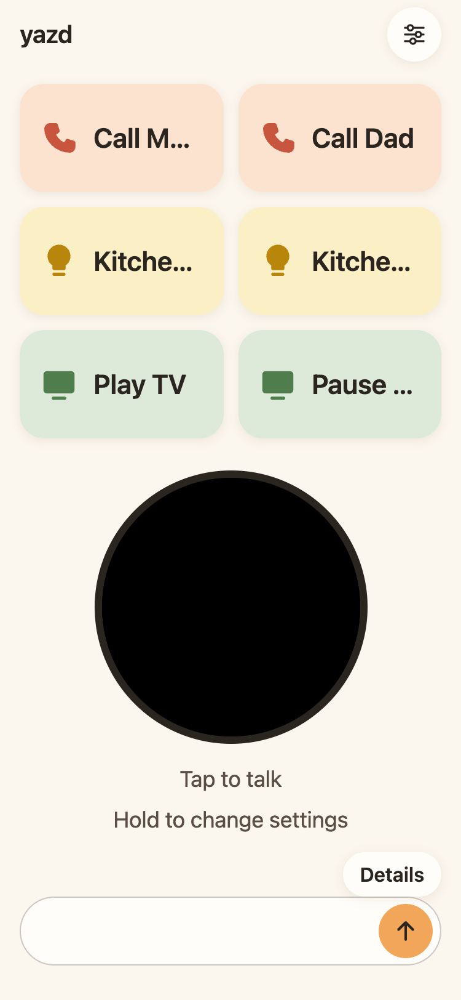

Open source · Voice first · Any language
yazd. An assistant that adapts to the person using it.
Say hello in your own language. yazd sets itself up for how well you see. It answers out loud and shows captions.

Small screens put up specific walls
yazd is designed first for one reference user. He is an elderly Farsi speaker with near-total vision loss and limited dexterity. He meets each wall below on an ordinary smartphone.
-
Vision
Icons, small text and on-screen confirmations cannot be read.
yazd confirms every action out loud. At minimal vision the whole screen is one button.
-
Mobility
Tapping small targets, typing and opening menus need steady hands.
Voice is the main input. Every target he relies on is at least 88px.
-
Hearing
A spoken reply that is missed is gone.
Every reply is also captioned. The phone vibrates when listening starts and stops.
-
Language
Assistants and menus often assume English.
yazd replies in the language the user spoke. No prompt names a language.
It starts with hello
There is no menu to read. The first screen is one big button. It shows a yellow orb on black.
-
Tap once to hear the welcome
yazd reads the welcome in Farsi, English, Spanish and Italian, one after another. The sentence on screen follows the voice. Nothing is recorded yet.
-
Tap again and say hello
yazd detects the language from that one word. سلام sets Farsi. Hello, hola and ciao set English, Spanish and Italian.
-
Answer one question out loud
yazd asks how well you see the screen, in your language. Say one, two or three. The screen reshapes at once.
If no language is heard, four large language buttons appear. Setup opens again from the personalize sheet. At low vision, holding the companion for two seconds opens it. At minimal vision, holding the screen does the same.
- دکمه را فشار بده و بگو «سلام»
- Press the button and say “hello”
- Pulsa el botón y di «hola»
- Premi il pulsante e di' «ciao»
Ask. It routes. It answers out loud.
-
Ask in your own language
Tap the companion once and speak. A pause ends the request, so nothing has to be held down. Space and Enter work too. A text box takes typed requests.
-
Or tap a shortcut tile
Six large tiles cover daily tasks. Each tile is tinted by kind. Its label is in your language.
- Call Mom
- Call Dad
- Kitchen light on
- Kitchen light off
- Play TV
- Pause TV
-
A specialized agent acts
An orchestrator routes the request to one sub-agent with its own tools. If the request is unclear, yazd asks one short question instead of guessing.
- Calls and messages
- Home lights
- TV and media
- Settings
- Time and day
- Clarifier
-
It asks, then remembers
Your answer to a follow-up question finishes the original request. Say “call Ahmadi” and yazd asks “Hossein Ahmadi or Hassan Ahmadi?” Say “Hossein” and yazd calls Hossein Ahmadi. An answer counts for 90 seconds.
-
The reply comes in your language
yazd replies in the language you spoke. If that is unclear, it uses the language from setup. The reply is spoken and captioned. Captions add an English line for helpers.

Actions on the outside world
- Phone calls and text messages. Contact names are resolved against a sample contact list. No call or message is sent.
- Turning lights on and off.
- Playing, pausing and controlling the TV.
These tools only record the request and report success. Nothing leaves the server.
What actually happens
- Setup by voice. The language comes from your hello. The vision mode comes from your answer.
- Changing yazd's own settings. The change shows on screen right away.
- Telling the time and day, read from the server clock.
- Asking one follow-up question and finishing the request with your answer.
- Speech recognition, caption translation and spoken replies. They run through OpenRouter when the server has an API key.
Without an API key, the server replays recorded conversations. They only match the exact demo phrases.
It fits how well you see
Setup picks one of three vision modes. Each mode changes what is on screen. Voice works the same in all three.
-
Full
“I see the screen well”
Shortcut tiles, the orange companion, captions and a text box.
-
Low
“I see shapes and colors”
The same layout with larger labels. The companion is black. It turns bright yellow while listening, with one short white flash. Hold it for two seconds to change settings.
-
Minimal
“I barely see the screen”
The whole screen is one button. Tap to talk. One giant word shows the state: Ready, Listening, Thinking, Done or Try again. Hold for two seconds to open setup.

Brightness carries the signal, not hue. A caregiver can pick other colors. Text stays readable on any of them. With reduced motion, colors change with no flash.
Change it by asking
Four settings change by voice. “Slower” sets speech to 0.75×. “Faster” sets it to 1.25×. “Bigger” sets captions to extra large. “Smaller” sets them to small. “Go back to normal” resets everything.
| Setting | Range | Default | What it changes |
|---|---|---|---|
| Speech rate | 0.5× to 1.5× | 1.0× | How fast replies are spoken. Pitch is preserved. |
| Caption size | Small, medium, large, extra large | Large | Caption text, from 24px up to 48px. |
| High contrast | On or off | On | Captions in light text on black instead of dark text on cream. |
| Silence wait | 0.8 s to 4 s | 1.5 s | How long yazd waits in silence before the request counts as finished. |
Demo phrases, in Farsi: آهستهتر صحبت کن (“speak slower”) and برگرد به حالت عادی (“go back to normal”).
Or make it theirs on screen
A helper opens the personalize sheet from the round button in the header. It closes with Escape or Done. Choices are saved in the browser.
- Name. What the companion is called.
- Color. Six warm hues: apricot, coral, rose, terracotta, honey, marigold.
- Shape. Circle, blob or ring.
- Character. A glowing orb or a face.
- Language. Farsi, English, Spanish or Italian. Tiles, hints and setup follow it.
- View. Full, low or minimal.
- Vision and language. Opens setup again at the spoken vision question.
- Start over. Clears the profile and shows the welcome.
Add the ability your person needs
Every ability is a self-contained extension. It has an agent, its tools and an
optional screen surface. Developers and caregivers clone the repo and add one. The
recipe lives in .kiro/steering/extensions.md. In Kiro you pull it into a
chat with #extensions.
The recipe, in order
- Declare the tools and their typed inputs in the shared contracts.
- Register the agent with a system prompt and its tool list.
- Add one line to the router saying what the agent handles.
- Describe each tool with a JSON schema: required fields, enums, limits.
- Wrap tools that do real work, validating input before it runs.
- Wire the wrapper into the app. Real implementations are chosen there, by config.
- Put every user-facing string in the strings package.
- Add a screen surface only if the ability needs one.
- Record a replay fixture, so the ability works with no API key.
Each step starts with a failing test. The settings agent is the worked example in the recipe.
How Kiro was used
-
Specs
Requirements, design and tasks live in
.kiro/specs/. They cover the clock, the settings agent, friendly failures, conversation context, the TTS voice fix, the companion UI and the vision modes. -
Steering
Product, structure, tech and UI design rules load into every relevant session. The extensions recipe is a manual steering file.
-
Hook
After every spec task, a hook runs tests, lint and typecheck. A broken task is caught right away.